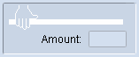
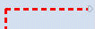

Это показывает, какой материал выбран и сколько пластин загружается в лоток.

|
|
После нажатия этой кнопки крышка разблокируется после ряда внутренних последовательностей. |
|
|
Лоток может иметь следующие состояния:
Это появляется, когда сумма, установленная во вкладке «Материал», достигнута.


Лоток загружен, но его состояние (полное, почти пустое, пустое) еще не проверено.
Количество пластинок в подносе можно ввести в эту коробку. Счетчик уменьшается каждый раз, когда тарелка подвергается воздействию.
При загрузке лотка необходимо создать связь между лотоком и материалом и ввести количество пластин в лоток. Настройки сохраняются, когда вы нажимаете «Применить».
Дальнейшая эксплуатация не требуется, если тот же материал запрашивается повторно.
Если материал, который не находится в лоток запрашивается, вы должны поменять этот лоток на один с правильным материалом. При загрузке нового лотка необходимо ввести количество пластинок в лоток в «Сумме». Связь между лотком и новым материалом создается автоматически.

Количество введенных пластин помогает пользователю проверить, сколько пластин уже было изображено.

Связь между валом ручного материала и материалом создается автоматически, когда материал запрашивается RIP. Соответствующая пластина должна быть помещена в материальный вал вручную. Связь очищается, когда пластина втягивается в блок.
Настройки для активного материала отправляются на диктофон и активируются при нажатии «Применить».
Ваши последние входные данные отменяются, нажав «Сброс», если кнопка «Применить» не была нажата.
Нажмите «Изменить...», чтобы открыть «Материальный волшебник (2)». Здесь вы можете ввести новые материалы или изменить параметры существующих материалов. «Материальный волшебник (2)» также отображается, когда вы дважды щелкаете строку в таблице.
Нажатие «Link» или «Unlink» создает или очищает связь между материалом и валом материала или лотоком. Ссылка / Unlink
Нажатие «Link» или «Unlink» создает или очищает связь между материалом и валом материала или кассетным подносом.
Copyright © 2016 Heidelberger Druckmaschinen AG